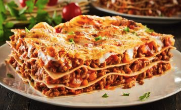

Lasagna

Description
Ingredientes
- 500 g de massa de Lasanha
- 2 caixas de creme de leite
- 3 colheres de farinha de trigo
- 500g de mussarela
- 2 copos de leite
- 3 colheres de óleo
- 3 dentes de alho amassado
- 500 g de carne moída
- 3 colheres de manteiga
- 500g de presunto
- sal a gosto
- 1 cebola ralada
- 1 caixa de molho de tomate
- 1 pacote de queijo ralado
Montagem parte 1
- Lasanha
- Cozinhe a massa segundo as orientações do fabricante, despeje em um refratário com água gelada para não grudar e reserve.
- Molho à bolonhesa
- Refogue o alho, a cebola, a carne moída, o molho de tomate, deixe cozinhar por 3 minutos e reserve.
- Molho branco
- Derreli a margarina, coloque as 3 colheres de farinha de trigo e mexa.
- Despeje o leite aos poucos e continue mexendo.
- Por último, coloque o creme de leite, mexa por 1 minuto e desligue o fogo.
Montagem parte 2
- Despeje uma parte do molho à bolonhesa em um refratário, a metade da massa, a metade do presunto, a metade da mussarela, todo o molho branco e o restante da massa.
- Repita as camadas até a borda do recipiente.
- Finalize com o queijo ralado e leve ao forno alto (220° C), preaquecido, por cerca de 20 minutos